Does an estimate of unmetered solar output in each history day help the axial-attention network forecast a Primary's demand?
We asked whether a neural network that forecasts a Primary substation's electricity demand becomes more accurate when each of the 14 days of history that the neural network reads also carries an estimate of the solar power generated behind the substation. Each day of history is one row of the network's input, called a history row. Unmetered photovoltaic (PV) generation is the generation behind a Primary that no meter of National Grid Electricity Distribution (NGED) records separately, so the Primary's meter reads demand minus that generation. The estimate is the Primary's solar capacity (as estimated at the cutoff of the test month, the last date the capacity estimate may use) times a yield curve between 0 and about 1. The yield curve is driven by the satellite irradiance of the Copernicus Atmosphere Monitoring Service (CAMS) for the same half-hour of the history day. The neural network is the axial-attention neural network of experiment 713. This page is part 1 of follow-up F7 (the unmetered-solar follow-up to experiment 713), and part 2 is experiment 717, which adds an explicit PV forecast to the target row.
Five arms (variants of the neural network) are compared, each on 8 monthly test periods (2025-11
to 2026-06) and 5 random seeds. Arm M* (the star marks the network that experiment 713 selected)
is that neural network with no PV input. Arm H is the same neural network with the PV estimate in
the history rows. Arm H-S is the placebo: it has the same estimate built from the sky of the date
28 days earlier, so it has the same parameters and capacity as H and none of the actual sky. Arm
Z is a refit of M* by this experiment's training loop, which tests whether the refit alone
changes a score. Arm H-X, a report-only placebo with another Primary's estimate, has 2 seeds.
The metric is the continuous ranked probability score (CRPS) in percentage points of capacity,
averaged over leads from 24 h up to 240 h, and a lower number is better. A lead is the number of
hours from the forecast origin to the forecast half-hour. A negative difference favours the first
arm of a contrast. The two counted contrasts are A1 (H minus M*) and A2 (H minus H-S). Each
is read separately for the six signed-MW Primaries (D5, D9, D10, D11, D14, and D16, metered in
signed megawatts) and for the eight MVA-only Primaries (D2, D3, D4, D8, D12, D19, D21, and D22,
metered only in megavolt-amperes). D15 and D18 form a third group with no solar estimate, which no
counted reading covers.
The estimate made no detectable difference to the forecast, so the verdict is not supported.
A1 is -0.0167 [-0.0415, +0.0076] at the six signed-MW Primaries and -0.0184 [-0.0426, +0.0107] at
the eight MVA-only Primaries. The brackets give the 98.75% interval (1 - 0.05/4, because four
readings count towards the verdict). A2 is -0.0070 [-0.0216, +0.0022] and -0.0167 [-0.0370,
+0.0004]. Every interval includes zero. Every interval also lies inside plus or minus 0.06 points of
capacity at the six signed-MW Primaries and plus or minus 0.16 at the eight MVA-only Primaries,
which are the smallest differences the design could have detected.
On this evidence the estimate should not be added to the neural network. The neural network already reads the satellite sunshine of every history day, which may explain why the extra input added little, but this experiment did not test that explanation.
Two caveats limit what the verdict means. First, two known-answer gates were waived. A known-answer gate trains the neural network on synthetic data in which the right answer is built in, to show that the network can find it. Experiment 713's gate failed two checks (KA3 and KA12) and this experiment's gate failed one (KF9), and the maintainer waived both. So no conclusion about era recognition or following level shifts is backed by a passing known-answer test, and the page cannot say whether the history path learned to use the estimate. Second, the capacity estimate of the eight MVA-only Primaries in the seven test periods 2025-11 to 2026-05 looks ahead of the cutoff of each test period, so A1 at those Primaries is not clean, and this page does not measure how large that effect is. The attention maps and forecast examples of D19 and D21 in the test period 2026-05 also use capacity factors from the future (section "Capacity look-ahead at the eight MVA-only Primaries").
Result
The verdict is not supported, taken from the pre-registered mapping and applied as written. In
this page a reading is one contrast with its interval, and a read-out is an analysis of stored
forecasts without a refit. Each of the four counted readings is "no detectable difference", because
its 98.75% interval lies inside plus or minus 0.06 points of capacity (the six signed-MW Primaries)
or 0.16 (the eight MVA-only Primaries). Experiment 713's pre-registered mapping, with A1 in place of
H1, gives not supported when both groups read "no detectable difference", and A2 enters through
the placebo guard. Both groups read so, and the verdict adds one to the stop-rule count of this idea
(the count of not supported and refuted verdicts on one idea, explained in the section "The
maintainer approved this experiment although earlier experiments on the same idea returned not
supported"). The verdict function of e00716_score.py receives the two readings of A1, one for
each group, and closes_line is true. The pre-registered prediction held: A1 lies inside its
ranges, and the interval of A2 includes zero in both groups, although the upper end at the eight
MVA-only Primaries is only +0.0004. Every number in this section comes from score/part1.json,
score/secondary_part1.json, score/zrule.json, or score/baseline.json in the data folder of
this experiment.
| Contrast | Group | Point | Interval (98.75%) | Seeds (of 5) with the sign of the point |
|---|---|---|---|---|
A1: H minus M* |
the six signed-MW Primaries | -0.0167 | -0.0415 to +0.0076 | 4 of 5 |
A1: H minus M* |
the eight MVA-only Primaries | -0.0184 | -0.0426 to +0.0107 | 4 of 5 |
A2: H minus H-S |
the six signed-MW Primaries | -0.0070 | -0.0216 to +0.0022 | 4 of 5 |
A2: H minus H-S |
the eight MVA-only Primaries | -0.0167 | -0.0370 to +0.0004 | 5 of 5 |
Control: H-S minus M* (the placebo against the network with no estimate) |
the six signed-MW Primaries | -0.0097 | -0.0387 to +0.0231 | 4 of 5 |
Control: H-S minus M* |
the eight MVA-only Primaries | -0.0016 | -0.0313 to +0.0430 | 2 of 5 |
Resampling whole months gives the intervals, and the 99.375% sensitivity reading (eight readings across both parts) changes no verdict. A1 is [-0.0436, +0.0096] and [-0.0445, +0.0144], and A2 is [-0.0230, +0.0028] and [-0.0391, +0.0016].
For A1, three guards fail in both groups. The point estimate does not reach 0.034 at the six
signed-MW Primaries or 0.090 at the eight MVA-only Primaries. The t interval on the 8 monthly
differences (-0.0536 to +0.0186 at the six signed-MW Primaries, -0.0580 to +0.0203 at the eight
MVA-only Primaries) fails its guard. The guard that every seed has the same sign also fails. A
gain reading was therefore unreachable. The control H-S minus M* is not a "loss" in either
group, so the placebo guard of small gain does not matter here.
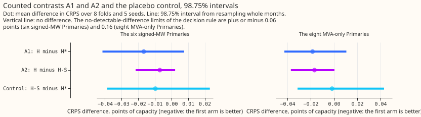
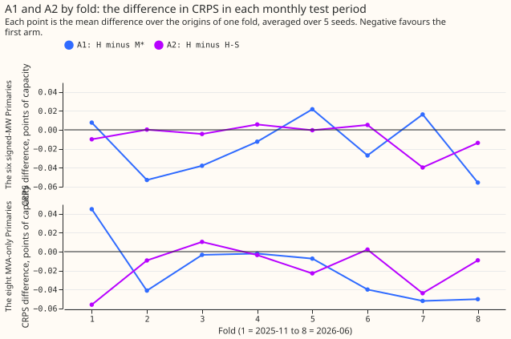
By fold, A1 is negative in 5 of the 8 folds at the six signed-MW Primaries and in 7 of 8 at the
eight MVA-only Primaries, and A2 is negative in 5 folds at the six signed-MW Primaries and in 6 at
the eight MVA-only Primaries. The first fold of the eight MVA-only Primaries (2025-11) is the one
positive A1 month there, at +0.045 (monthly in part1.json). The seed differences of A1 are all
negative except one seed in each group.
The 95% report-only readings (readings that cannot change the verdict) are consistent with a tie, with exceptions that change no verdict. The intervals are at 95%, uncorrected for the number of readings. The Candidate is P7+D50 of experiment 667, one of the benchmarks that the front matter lists.
| Reading (95%) | The six signed-MW Primaries | The eight MVA-only Primaries |
|---|---|---|
H minus M*, mean absolute error of the median |
-0.0175 [-0.0508, +0.0156] | -0.0195 [-0.0544, +0.0207] |
H-S minus M*, 5 seeds |
-0.0097 [-0.0336, +0.0163] | -0.0016 [-0.0270, +0.0318] |
H minus H-X, 2 seeds |
-0.0003 [-0.0196, +0.0222] | -0.0081 [-0.0215, +0.0057] |
H minus Z, 5 folds, 2 seeds |
-0.0016 [-0.0525, +0.0584] | -0.0133 [-0.0750, +0.0351] |
Z minus M*, 5 folds, 2 seeds |
0.0000 [0.0000, 0.0000] | 0.0000 [0.0000, 0.0000] |
H minus the Candidate, 5 seeds |
-0.1638 [-0.2655, -0.0622] | +0.0037 [-0.0773, +0.0668] |
H-S minus the Candidate, 5 seeds |
-0.1568 [-0.2638, -0.0495] | +0.0205 [-0.0628, +0.0888] |
H-X minus the Candidate, 2 seeds |
-0.1546 [-0.2653, -0.0567] | +0.0179 [-0.0586, +0.0849] |
Z minus the Candidate, 5 folds, 2 seeds |
-0.0638 [-0.1648, +0.0331] | +0.0501 [-0.0542, +0.1546] |
Arms H, H-S, and H-X beat the Candidate at the six signed-MW Primaries and tie it at the
eight MVA-only Primaries. The difference of H from the Candidate is as large as the difference
of H-S from the Candidate, so, in these 8 folds and 5 seeds, the gain over the Candidate is as
large without the estimate as with it. Z minus M* is exactly 0.0, so the rule on arm Z did not
fire (score/zrule.json, audit_trigger_1_fires false). The H minus Z and H-X readings cover
fewer folds and seeds than the counted readings, and the scorer reads them on the cells that both
arms hold (extra_contrasts in part1.json).
A1 by lead band is flat and negative in every band. At the six signed-MW Primaries, A1 is -0.0211 [-0.0448, +0.0028] at leads of 24 h to 72 h, -0.0162 [-0.0365, +0.0055] at 72 h to 120 h, and -0.0150 [-0.0351, +0.0035] at 120 h to 240 h. At the eight MVA-only Primaries the three bands give -0.0171 [-0.0373, +0.0076], -0.0165 [-0.0375, +0.0069], and -0.0196 [-0.0407, +0.0029]. All six intervals include zero.
The absolute scores of the references are given here so that a reader can judge the size of the
differences. The mean CRPS from score/baseline.json is 3.0575 for M* and 3.2046 for the
Candidate at the six signed-MW Primaries, and 3.7036 and 3.6815 at the eight MVA-only Primaries. At
D15 and D18 the figures are 9.1779 and 7.9869. The file stores no absolute CRPS for H, H-S, the
climatology, the manual heuristic, or BG2.
At the two Primaries with no solar estimate, H still differs from M*. A1 at D15 and D18 is
-0.1779 [-0.4098, -0.0037] (95%, the pooled reading pooled:other), with D15 at -0.3448 [-0.7854,
-0.0123] and D18 at -0.0121 [-0.0468, +0.0246]. The estimate is zero and flagged absent at those
Primaries, so a difference there cannot come from the estimate. The difference at D15 and D18 shows
that a difference between the refit H and the stored M* can arise without any PV signal. The
pooled reading over all 16 Primaries (-0.0376 [-0.0652, -0.0115], 95%) is driven partly by D15 and
D22.
| Primary | Group | A1: H minus M* (95%) |
A2: H minus H-S (95%) |
|---|---|---|---|
| D5 | the six signed-MW Primaries | -0.0263 [-0.0747, +0.0191] | -0.0010 [-0.0266, +0.0274] |
| D9 | the six signed-MW Primaries | -0.0049 [-0.0226, +0.0208] | -0.0104 [-0.0398, +0.0103] |
| D10 | the six signed-MW Primaries | -0.0302 [-0.0554, -0.0089] | -0.0089 [-0.0168, +0.0003] |
| D11 | the six signed-MW Primaries | -0.0164 [-0.0405, +0.0035] | -0.0243 [-0.0628, +0.0015] |
| D14 | the six signed-MW Primaries | -0.0127 [-0.0568, +0.0357] | +0.0058 [-0.0118, +0.0280] |
| D16 | the six signed-MW Primaries | -0.0096 [-0.0523, +0.0336] | -0.0032 [-0.0321, +0.0204] |
| D2 | the eight MVA-only Primaries | -0.0123 [-0.0352, +0.0112] | +0.0013 [-0.0167, +0.0210] |
| D3 | the eight MVA-only Primaries | +0.0113 [-0.0031, +0.0263] | -0.0168 [-0.0463, -0.0002] |
| D4 | the eight MVA-only Primaries | +0.0126 [+0.0003, +0.0259] | -0.0056 [-0.0195, +0.0048] |
| D8 | the eight MVA-only Primaries | -0.0239 [-0.0654, +0.0133] | -0.0178 [-0.0579, +0.0082] |
| D12 | the eight MVA-only Primaries | +0.0001 [-0.0841, +0.0999] | -0.0436 [-0.1030, +0.0127] |
| D19 | the eight MVA-only Primaries | -0.0253 [-0.0448, -0.0109] | -0.0124 [-0.0321, +0.0011] |
| D21 | the eight MVA-only Primaries | -0.0196 [-0.0340, -0.0088] | -0.0067 [-0.0176, +0.0028] |
| D22 | the eight MVA-only Primaries | -0.0899 [-0.1887, -0.0068] | -0.0323 [-0.0655, -0.0020] |
| D15 | the two Primaries with no solar estimate | -0.3448 [-0.7854, -0.0123] | -0.0408 [-0.2077, +0.0977] |
| D18 | the two Primaries with no solar estimate | -0.0121 [-0.0468, +0.0246] | -0.0075 [-0.0321, +0.0135] |
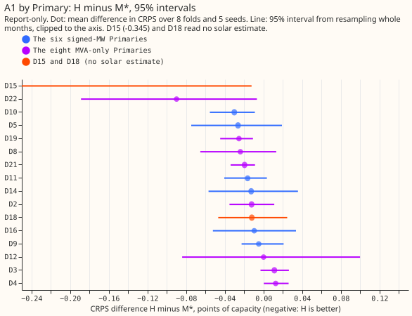
Of the 16 Primaries, A1 is negative at 13, and its 95% interval excludes zero at D10, D19, D21, D22, and D15 on the negative side and at D4 on the positive side. D19 and D21 use look-ahead capacity, and A2 at those two Primaries includes zero, so their A1 may reflect the leaked capacity that A2 cancels. The 16 per-Primary readings are at 95%, so about one interval in 20 would exclude zero by chance alone.
Leaving one Primary or one month out leaves the sign of A1 negative in both groups. At the six
signed-MW Primaries, the point stays between -0.0139 (D10 out) and -0.0190 (D9 out) over the
Primaries and between -0.0120 (2026-06 out) and -0.0231 (2026-03 out) over the months. At the eight
MVA-only Primaries it stays between -0.0082 (D22 out) and -0.0228 (D4 out) over the Primaries and
between -0.0141 (2026-05 out) and -0.0280 (2025-11 out) over the months. The guards of supported
that concern tails, cold nights, the mean absolute error, and masks all hold (guards in
part1.json), but supported was unreachable because no group read "gain".
Secondary readings S1 to S5 (95%, 14 readings in all, so at least one false positive is about as likely as not) change no verdict. The scorer counts 14 readings across S1 to S5 (S1, S2, and S4 give 4 each, and S3 and S5 one each), and the tables below show 9 of them. S1 and S2 are A1 and A2 on the solar block (06:00 to 14:30 UTC) of the three sunny folds, 2026-04 to 2026-06. S4 is A1 on the whole band of the four dark folds, 2025-11 to 2026-02.
| Reading | The six signed-MW Primaries | The eight MVA-only Primaries | Stored holds flag (six signed-MW, then eight MVA-only) |
|---|---|---|---|
S1: H minus M*, solar block, sunny folds |
-0.0263 [-0.0463, -0.0015] | -0.0775 [-0.1107, -0.0322] | No, Yes |
S2: H minus H-S, solar block, sunny folds |
-0.0187 [-0.0483, +0.0167] | -0.0247 [-0.0654, +0.0080] | No, No |
S4: H minus M*, dark folds |
-0.0244 [-0.0454, -0.0020] | -0.0007 [-0.0316, +0.0325] | Yes, Yes |
S1 at the eight MVA-only Primaries is the largest secondary reading, and its placebo contrast
includes zero. S1 is -0.0775 [-0.1107, -0.0322] with all 5 seeds sharing the sign, and its stored
flag reads Yes. S2, the same rows against H-S, is -0.0247 [-0.0654, +0.0080]. The capacity
look-ahead at these Primaries enters S1 and cancels in S2. S1 is a report-only reading at 95% among
14, so it changes no verdict and supports no claim about the actual sky. S3 (the gap between the
dull and the sunny third of days, 90 origin days, score/secondary_part1.json) is -0.0056 [-0.0296,
+0.0165] at the six signed-MW Primaries and +0.0174 [-0.0018, +0.0347] at the eight MVA-only
Primaries, and holds in neither group. S5, the Spearman correlation between the per-Primary A1 and
the photovoltaic (PV) share, is -0.358 [-0.772, +0.258] over 14 Primaries.
A post hoc interpretation, labelled as such and after the pre-registered one: the four counted points are all negative, and the design cannot resolve them. The points are -0.0167 (A1 at the six signed-MW Primaries), -0.0184 (A1 at the eight MVA-only Primaries), -0.0070 (A2 at the six signed-MW Primaries), and -0.0167 (A2 at the eight MVA-only Primaries). The smallest gain worth porting is 0.02 points of capacity, and the design resolves differences of 0.06 and 0.16 with 80% power, so a gain of 0.017 would read as a tie even if it were real. The negative points of the placebo contrast (control: -0.0097 and -0.0016) and the by-Primary table (D15 at -0.345 without a solar estimate) say that the sign of A1 is not evidence for the estimate. The post hoc interpretation changes no verdict and no advice.
The pre-registered expectation was a tie, and the result matches the expectation. Each history
token already carries CAMS shortwave irradiance and solar geometry, so the estimate adds a capacity
scale, a physical shape, and units that match the power. Six earlier experiments (the six counted in
the section "The maintainer approved this experiment although earlier experiments on the same idea
returned not supported") found that an explicit PV term built on forecast weather did not help net
demand, and four of them were refuted, and experiments 703 and 704 found that the two previous-day
CAMS columns can be dropped from the Candidate with no detectable loss. With 5 seeds the design
detects, with 80% power, a CRPS difference of 0.06 points of capacity at the six signed-MW Primaries
and 0.16 points at the eight MVA-only Primaries, and a smaller difference is likely to read as a
tie.
Loss curves, attention maps, and forecast examples
All fits of the plan are stored: 40 fits of arm H, 40 of H-S, 16 of H-X, and 10 of Z, and
every one stopped by patience. Arms H and H-S cover 8 folds and seeds 0 to 4, arm H-X covers
8 folds and seeds 0 and 1, and arm Z covers 5 folds and seeds 0 and 1. The fit logs
(work/logs/<arm>/<fold>_s<seed>_fit.json) hold the validation loss of every pass of stages 2 and
3, and hold no training loss. No training-loss curve is drawn, because none was stored. The two
figures below plot the validation loss of every seed of M* (the stage 2 and stage 3 passes stored
in experiment 713's fit logs), H, and H-S, one panel for each fold.
The rule on arm Z did not fire: Z minus M* is 0.0 at both groups. The point estimate,
and both ends of its interval, are 0.0 at the six signed-MW Primaries and at the eight MVA-only
Primaries (score/zrule.json), so the refit by this experiment's training loop reproduces M*.
| Arm | Fits | Stage 2 passes: mean (min to max) | Stage 3 passes: mean (min to max) | Fits at the pass cap |
|---|---|---|---|---|
H |
40 | 13.3 (10 to 19) | 15.2 (9 to 33) | 0 |
H-S |
40 | 13.2 (10 to 19) | 15.2 (10 to 27) | 0 |
H-X |
16 | 14.1 (12 to 26) | 16.2 (10 to 31) | 0 |
Z |
10 | 13.4 (11 to 16) | 16.7 (10 to 23) | 0 |
No fit hit the 60-pass cap, so the null result is not an artefact of the training budget. The
table counts the passes that each stage ran before patience stopped it, from the stages entries of
the fit logs (e00716_writeup_figures.py tables).
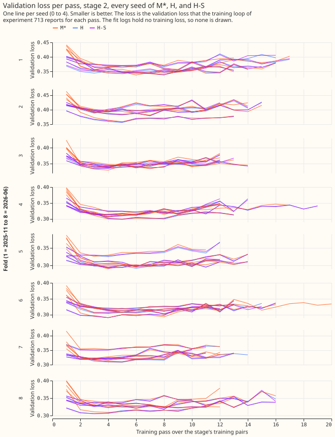
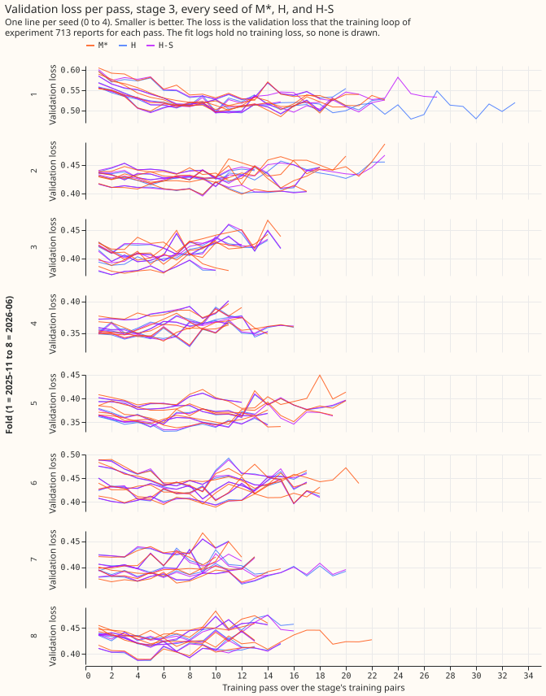
The attention maps differ little between M* and H in fold 2026-05, seed 0. The extraction
script e00716_attention_extract.py stored them (work/attention/Mstar_2026-05_s0.npz and
H_2026-05_s0.npz). The extraction script's forecast from each arm matches the stored forecast file
to 7.2e-07 of capacity. The network attends along two axes: the across-day weight says how much each
history day counts towards one half-hour of the forecast, and the read-out weights say how much each
history row counts in the final output. Averaged over the 496 Primary-and-origin pairs of the fold,
the across-day weight of every history row differs between the two arms by at most 0.00093.
The weight of the target row falls from 0.0286 to 0.0243 at lead day 1 and from 0.0265 to 0.0216 at
lead day 7 (summary_lead1 and summary_lead7, key mean_weight). In the read-out weights, both
arms put their largest weight on the history rows 7 and 14 days old, which have the target day's
weekday. At D19 on the clear target day, the two rows together carry a mean weight of 0.266 in M*
and 0.270 in H.
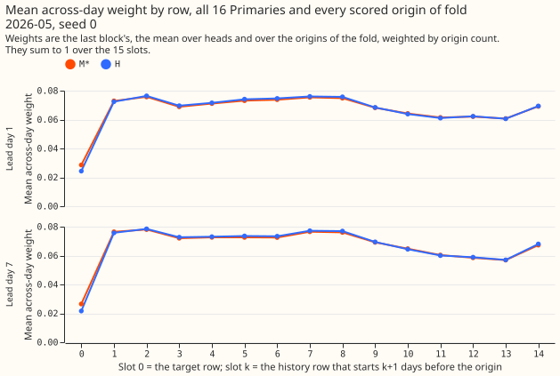
D19 and D21 read capacity factors from the future, so their maps in fold 2026-05 are not clean.
The as-of capacity factors of the eight MVA-only Primaries come from data to 2026-06, and the log of
the extraction (capacity: 2026-05 ... factors look ahead: True) marks D19, D21, and the other
MVA-only Primaries of experiment 662 that way. D11 is one of the six signed-MW Primaries, which have
no look-ahead. The figures show Primaries D11, D19, and D21, each on a clear target day and on a
dull target day that follows a sunny window. The case is chosen from the realised sky of the target
day, which no input sees. The forecast figures further down show the same three Primaries.
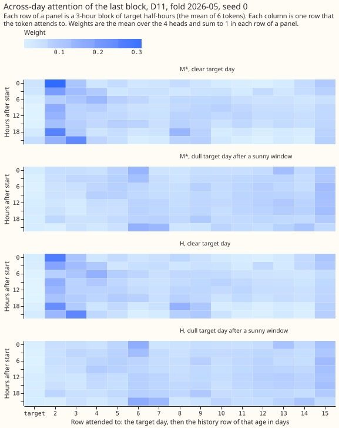
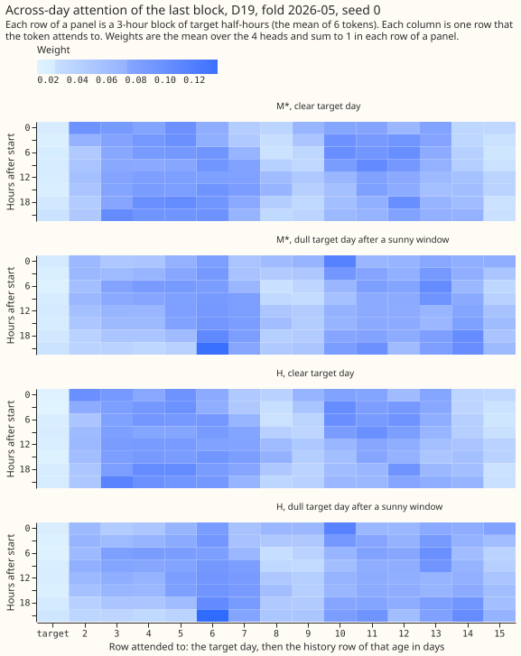
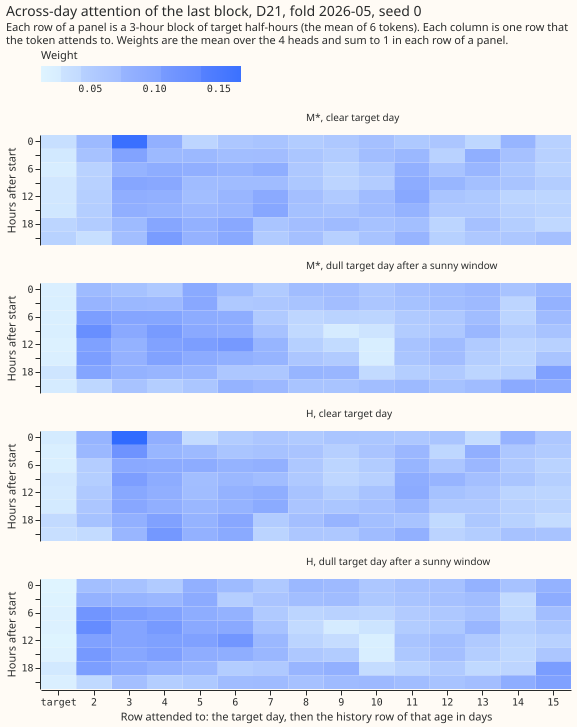
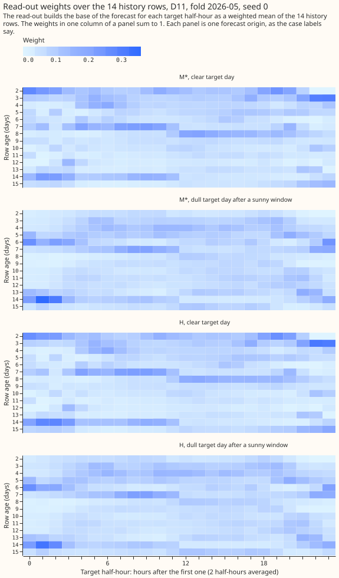
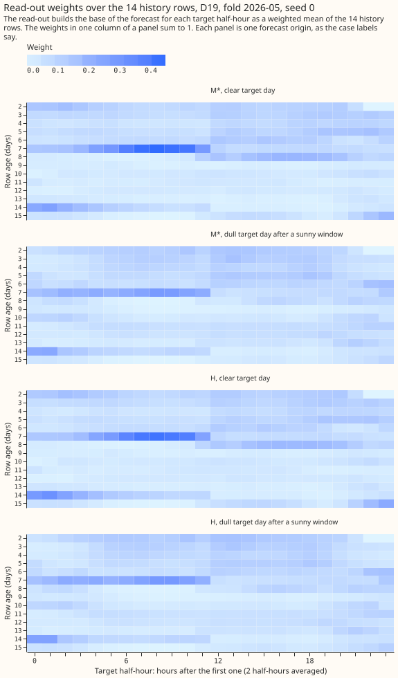
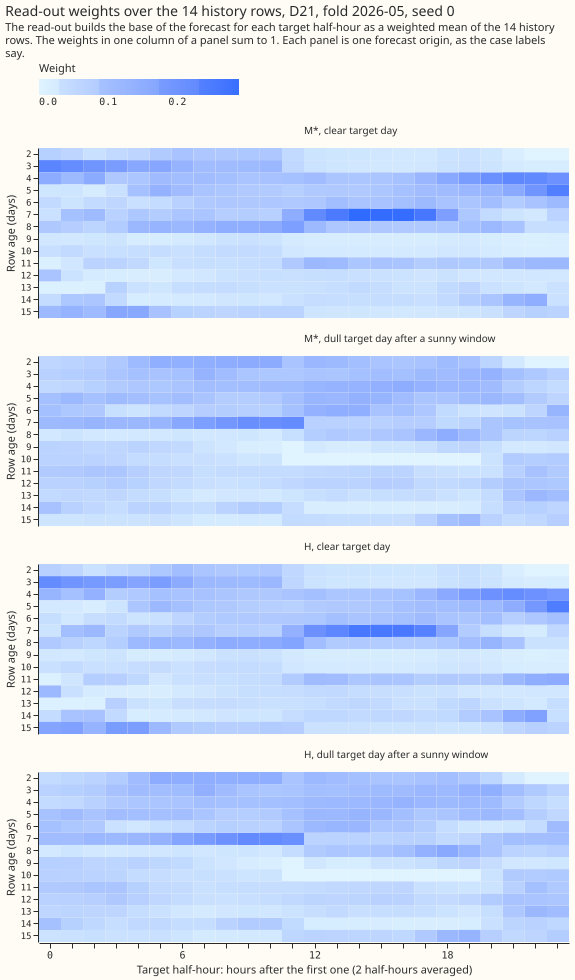
The first-day and full-horizon forecasts of M* and H are nearly the same at D11, D19, and
D21. The figures draw the stored forecast of fold 2026-05, seed 0, against the cleaned demand,
with the 5% to 95% band of M* and of H. D8, D12, and D22 are not shown, because their capacity
looks ahead too. The demand axis is in shares of capacity and the page gives no capacity in
megawatts. Neither figure measures which arm is better.
The two figures use different forecasts. The first-day figure uses the origins of the attention cases. The full-horizon figure takes, for each case, the latest stored origin that reaches the first valid half-hour of the case: that half-hour is 12:00 UTC on the case's day, and the origin is 09:00 UTC on the same day, a lead of 3 h. The stored forecast runs from 3 h to 338.5 h, so the figure also shows the first 21 hours, which the scored band of 24 h up to 240 h excludes.
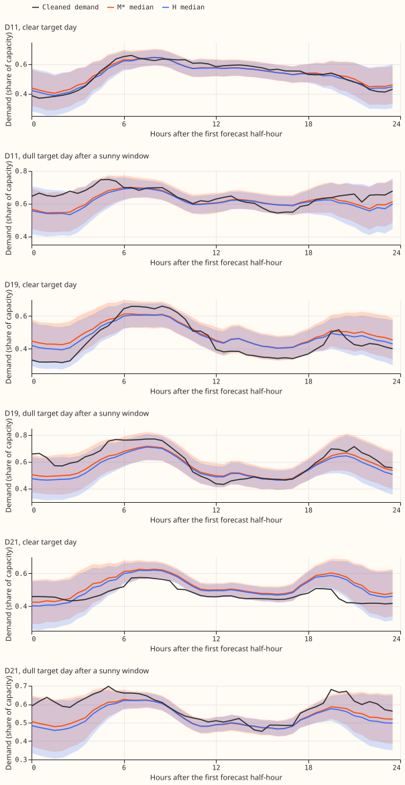
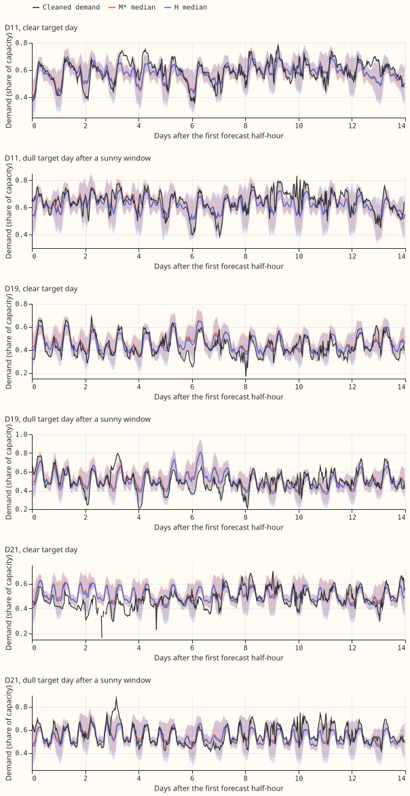
The no-refit read-out contrasts of arm H were not run. The command e00716_readouts.py
contrasts H fails, because line 190 of e00716_readouts.py calls score.available_seeds, which
e00716_score.py no longer defines. The reading is a secondary read-out that changes no verdict,
and it is not in the pre-registered verdict mapping. The seed sets also differ: H-cams and
H-convention have 40 forecast files each (8 folds, seeds 0 to 4), and H-lookahead, H-nopv,
H-scale0.7, and H-scale1.3 have 8 files each (8 folds, seed 0). The command needs a decision on
the seed set before it can run, and no script was edited. The learned-gain, look-ahead, PV-absent,
and capacity-scale read-outs, and the four load-shift scenarios, were therefore not scored, and
nothing on this page bounds the size of the capacity look-ahead.
The two mask read-outs that were scored keep the sign of A1 in both groups. The scorer reads
them (mask_points in part1.json). A1 is -0.0161 (CAMS-rule mask) and -0.0119 (mask of ages 2 to
5, called convention) at the six signed-MW Primaries, and -0.0162 and -0.0111 at the eight
MVA-only Primaries.
Checks
- The median forecast minus the mean forecast, per site, is not stored.
part1.jsonhas no table of it, so the page does not report it. The missing table is a gap against the plan. - The error of the median beside the CRPS contrast. At the six signed-MW Primaries the contrast in normalised mean absolute error is -0.0175 [-0.0508, +0.0156] (95%) against a CRPS contrast of -0.0167, and at the eight MVA-only Primaries it is -0.0195 [-0.0544, +0.0207] against -0.0184. Both pairs point in the same direction, so audit trigger 3 does not fire.
- Audit triggers that fire, and the audit's result. An audit trigger is one of the seven
conditions in the
ml-experimentskill that require an audit before merge. Trigger 1 fires, and trigger 6 fires only on a liberal reading. Triggers 2, 3, 4, and 5 do not fire, and trigger 7 was not assessed. A read-only audit by a Claude Sonnet large language model, run under the manager's ruling by an agent that did not write the code, recomputed triggers 3, 4, 5, and 6 from the stored forecasts and found no flip of any reading. The numbers below are from that audit and agree withpart1.json. The manager is the session that coordinates the experiments. - Trigger 1 fires. Check KF9 of this experiment failed (0.00070 against the 0.00729 needed) and
the maintainer waived it, the same kind of waived known-answer check that experiment 713 counted
as trigger 1. The placebo and the control arm
Zdid not fail. - Trigger 2 does not fire. The result matches its prediction (A1 inside its ranges, A2 including zero in both groups), and no earlier finding is contradicted: experiments 703 and 704 had found that CAMS columns can be dropped with no detectable loss.
- Trigger 3 does not fire. The audit recomputed the mean absolute error of the median beside each CRPS contrast, and the signs agree. A1 is -0.0167 (CRPS) and -0.0175 (error of the median) at the six signed-MW Primaries and -0.0184 and -0.0195 at the eight MVA-only Primaries. A2 is -0.0070 and -0.0024 at the six signed-MW Primaries and -0.0167 and -0.0278 at the eight MVA-only Primaries.
- Trigger 4 does not fire. All 14 leave-one-out points of A1 stay negative (-0.0082 to -0.0280), and every A1 interval includes zero. The widest lower ends are -0.0499 at the eight MVA-only Primaries without D3 and -0.0475 at the six signed-MW Primaries without D9. The largest upper ends are +0.0176 at the six signed-MW Primaries without D10 and +0.0173 at the eight MVA-only Primaries without D22. One A2 leave-one-out interval excludes zero: A2 at the eight MVA-only Primaries without D8 is [-0.0343, -0.0007]. The sign is unchanged, A2 is not in the verdict, and the verdict does not change.
- Trigger 5 does not fire. The scorer's
audit_trigger_5is false for the counted groups. The reading at D15 and D18 (HminusM*-0.1779 [-0.4098, -0.0037], half-width 0.2031) moves the score by less than its own half-width, and the first clause does not apply there, becauseHis not nested inM*. The controlH-SminusM*is -0.0097 and -0.0016 against half-widths of 0.031 and 0.037 at 98.75%, andZminusM*is exactly 0.0. - Trigger 6 fires only on a liberal reading and does not affect the verdict. The trigger reads
"A headline interval is more than twice as wide, or less than half as wide, as the same contrast's
interval in a sister experiment on the same rows". The sister experiment is experiment
717, and the two experiments hold
the same 2,520,774 common keys (
n_common_keysinpart1.json) and the same forecast rows per group: 611,055 at the six signed-MW Primaries and 816,768 at the eight MVA-only Primaries. The widths are those of the 98.75% intervals inscore/part2.jsonof experiment 717 andscore/part1.jsonhere. The headline pairing (A1 against B1,HTminusH) has widths 0.0491 and 0.0542 at the six signed-MW Primaries (ratio 1.10) and 0.0532 and 0.0806 at the eight MVA-only Primaries (ratio 1.51), so the trigger does not fire. Two other pairings fall outside the factor: the placebo contrast (A2 against B2) at the six signed-MW Primaries, 0.0238 and 0.0745 (ratio 3.14), and the control at the eight MVA-only Primaries, 0.0743 and 0.0303 (ratio 0.41). The other ratios are 1.78 for A2 against B2 at the eight MVA-only Primaries and 0.84 for the control at the six signed-MW Primaries. The placebo contrast at the six signed-MW Primaries and the control at the eight MVA-only Primaries are not headline intervals, and each pairs two different contrasts: A2 comparesHwith a placebo that reads the sky of 28 days earlier in the history rows, and B2 comparesHTwith a placebo that reads the ENS run issued 28 days earlier. A "no detectable difference" reading is unaffected by the wider or narrower interval. - Trigger 7 was not assessed.
- Cold nights. The difference
HminusM*on cold winter nights is -0.0300 at the six signed-MW Primaries and -0.0481 at the eight MVA-only Primaries (cold_night_differenceinpart1.json), soHis not worse thanM*, and the cold-night guard holds. - Tails. The upper limits of the 95% intervals of the q01 and q99 pinball-loss contrasts
(
HminusM*) are 0.0053 and 0.0027 at the six signed-MW Primaries and 0.0008 and 0.0013 at the eight MVA-only Primaries, all below the limit of 0.05 (guards.<group>.tails). Coverage tables for q01, q05, q95, and q99 were not produced.
Planned tables that do not exist
Several tables of the plan were not produced. The stored files have no table of each arm's
absolute CRPS beside the manual heuristic and BG2, no q01, q05, q95, and q99 coverage table, no
avoidable-curtailment cost, and no four load-shift scenarios. The plan's reading of cold winter
nights is the single difference above, with no per-arm score. The report script e00716_report.py
fails with a TypeError when asked for the report-only contrasts: line 125 indexes a list as a
dictionary. The report-only contrasts on this page (H minus H-X, H-S minus M*, H minus
Z, every arm minus the Candidate, the lead bands, the per-Primary table, and the pooled readings)
were taken from score/part1.json directly. The script was reviewed and was not edited.
The synthetic-data test (the known-answer gate) failed and was waived
A known-answer check fits the neural network on a synthetic world in which the hidden sky is
known, and passes only if the network recovers it. The gap is the naive reference's mean
absolute error minus the oracle's. World WH hides the sky in the history rows. The naive and oracle
ridge references are linear baselines, and the oracle reference is the one that also receives the
hidden sky as a feature.
Known-answer check KF9 failed and the maintainer waived it, so no passing known-answer test backs
the history path. KF9 asks arm H to beat arm H-S on the solar block of world WH by half the
gap. KF9's value is 0.00070 against the need of 0.00729, and its secondary readings (days 1 to 60,
days 61 to 236, and pass 60) fail as well. KF10, KF11, and KF12 pass. No threshold and no verdict
rule changed.
An audit of the failure found no implementation fault and two method findings. First, the
patience-8 rule stopped arm H at passes 4, 23, and 5 of seeds 0, 1, and 2, against global bests at
passes 43, 55, and 32, because the history path learns slowly. Second, the pass mark forces arm H
below the oracle ridge: arm H-S scores 0.0394 on the solar block and arm Z 0.0397, the naive
ridge reference 0.0470, and the oracle ridge 0.0324, so arm H must score 0.0321 or better, below
the oracle ridge's 0.0324. Every statement that the history path recovers the hidden sky from the PV
estimate is therefore unsupported by a passing known-answer test.
The early-stopping pre-check of the known-answer worlds read one seed of three, and the other
seeds of arm M in world WH are noisier than the pre-check's limit. The pre-registered pre-check
reads arm M of seed 0 only. At rung 4 it passed in both worlds, with a last-10 validation-loss
noise of 0.0109 in world WH against the limit of 0.0225, and 0.0121 in world WT against the limit of
0.134. Seeds 1 and 2 of arm M in WH have a last-10 noise of 0.029 and 0.031, above the WH limit,
so the rung-4 pass in WH depended on seed 0. In WT, seeds 1 and 2 have 0.038 and 0.016, below the WT
limit.
GPU time
For parts 1 and 2 together, 23.6 GPU-process-hours (hours of one process that used the GPU) are
counted, and up to about 26.0 if two unrecorded runs used the GPU; part 1's own fits and checks took
15.28. The 23.6 hours are the figure on the page of experiment
717: the start-to-end times of the
GPU jobs in the F7 run logs (22.4 hours, after leaving out the CPU baseline-scoring run of
f7w_chain.log, about 0.1 hours), the two known-answer fits of arm M in worlds WH and WT at seed
0 (1.13 hours, from file times), the check KF7 (0.02 hours), and the attention extraction (0.02
hours). Part 1's share of 15.28 hours is the sum of the gating fits, KF7, the fits and predictions
of arms H, H-S, H-X, and Z, the no-refit read-outs of H, and the attention extraction,
from the same logs and from the seconds field of the fit logs (the 106 fits of part 1's arms took
4.94 of those hours). Two further items are not counted, because their device is unconfirmed: the
four runs of the known-answer world ladder (1.22 hours, from the seconds stored in
world_rung/rung1.json to rung4.json) and the rebuild of that ladder (about 1.2 hours of wall
time). Neither run log records a device, and the code of the ladder (e00716_world_rung.py and
e00716_worlds.py) names none, so both are taken to run on the CPU. If both ran on the GPU, the
total is 23.6 + 1.22 + 1.2 = 26.02 hours, so the range is 23.6 to about 26.0 hours. The counted
total stays under the manager's stop line of 26, and the upper end of the range is at it. The run
logs live in the workstation's /tmp, not in the data folder. Every figure is approximate to
about 0.1 hours: each is a hand sum of the start-to-end times in those logs and of the seconds
fields of the fit logs, and the split between part 1 (15.28 hours) and part 2 (8.4 hours) could not
be reproduced exactly by a later review, whose sum of the run logs was about 22.5 hours against the
22.4 above.
The maintainer approved this experiment although earlier experiments on the same idea returned not supported
The maintainer asked for follow-up F7 by name and confirmed the scope on 2026-11-23 ("I
confirm."), which is the approval the demand protocol requires for an idea past its fourth counted
verdict. The confirmation was relayed through the experiment manager. The protocol's stop rule
counts the verdicts not supported and refuted on one idea, resets the count at supported or
small gain, and from the fourth experiment requires the maintainer's approval and scoring at every
Primary. Part 1 scores all 16 Primaries.
The idea of part 1 has one counted experiment, and the idea of part 2 has six on a strict
reading. The idea of part 1 is realised or recent satellite sunshine as an input that explains the
past. Its counted experiment is experiment 504 (not supported: CAMS days at least 36 hours old, as
summary columns, in a neural network without history rows). Experiment 480 (supported) is a weak
reset, because it gave the forecast the realised sunshine of the target half-hour. Experiments 039,
289, 639, and 661 found that realised CAMS explains past net demand, and their verdicts neither
count nor reset. Part 2's idea (an explicit embedded-PV forecast in a net-demand forecast) has six
counted experiments on a strict reading: 409, 477, 501, 644, 655, and 664. Counting experiment 661,
experiments 350 and 351, and experiments 329 and 419 as well gives 7, 9, and 11. Whether part 1
shares part 2's idea for the count is a decision for the manager.
| Experiment | What the experiment gave the forecast | Verdict | Counted for scope (b) |
|---|---|---|---|
| 409 | An explicit solar term in the pooled mixture density network | not supported |
Yes |
| 477 | An explicit PV module in the net demand neural network | not supported |
Yes |
| 501 | An explicit solar-output column from an as-of capacity | refuted |
Yes |
| 644 | An explicit solar-capacity term with ENS weather | refuted |
Yes |
| 655 | A member-level solar curve with cell temperature | refuted |
Yes |
| 664 | Net demand as gross demand minus a sampled ENS solar curve | refuted |
Yes |
| 661 | Whether the ENS time step explains experiment 644, and a bias adapter | refuted |
Borderline (gives 7) |
| 350, 351 | A capacity-free irradiance curve and a capacity read-out in the GAM stack | not supported, twice |
Arguably (gives 9) |
| 329, 419 | A 3-member solar distribution; a solar summary in the mixture density network | not supported, twice |
Borderline (gives 11) |
| 031, 349, 405, 416 | PV features in XGBoost and the GAM stack; explicit term with learned capacity or 5 seeds | inconclusive |
No |
| 352, 639, 643 | Explicit terms scored with recorded weather | partly supported |
No: neither counts nor resets |
This page departs from three items of earlier advice, on the maintainer's instruction. Experiments 644 and 655 advise against any explicit solar term in the ENS demand network. Experiment 504 advises against satellite irradiance columns at least 36 hours old. Experiment 501 advises keeping the irradiance input and the Primary embedding as the network's way of representing solar output. This experiment follows experiment 504's advice to score cold winter nights separately, experiment 661's advice to keep production's window-mean resampler for ENS shortwave, and experiment 501's advice to judge a capacity by a known-answer or placebo test.
The experiments in the table above gave the neural network no 14 aligned days of net power beside the sunshine of each day, so they could not use a PV estimate to separate demand from solar in the past. The page does not claim that no other experiment did.
Experiment 713's screen stop rule binds this experiment. The rule fires if, on the eight folds of experiment 713's design, the selected neural network is 0.10 to 0.15 points worse than the Candidate. If the rule fires, an increment on that neural network has no route to production, and the work stops to ask.
Experiment 713's known-answer gate was waived, and this limits the conclusions
Experiment 713's known-answer gate failed KA3 and KA12 and the maintainer waived it on 2026-11-23 (713's design amendment 4). Every warm-start state here comes from that waived gate. This experiment therefore makes no claim about era recognition or about following level shifts, and every verdict, headline, and take-home message of this experiment says so. This experiment's own gate (KF1 to KF15 below) is separate from the gate of experiment 713. Its check KF9 failed and was waived (section "The synthetic-data test (the known-answer gate) failed and was waived").
Capacity look-ahead at the eight MVA-only Primaries
The as-of capacity of the eight MVA-only Primaries in the seven folds 2025-11 to 2026-05 uses information from after the fold's cutoff, in two ways. Experiment 662 stored neural networks (probes) that were trained to 2026-03, so folds 2025-11 to 2026-02 look ahead by up to 4 months. The calibration factors of all seven folds come from data to 2026-06 (experiment 662's page says "the calibration at 2026-03 reuses the 2026-06 factors", and the rescale of 0.7858 of experiment 673 is measured at the 2026-06 cutoff). Only fold 2026-06 is clean at the eight MVA-only Primaries.
The six signed-MW Primaries are clean in every fold, and the leak affects A1 but not A2. Experiment 649 stores one calibration factor per cutoff. The leak is one constant per Primary and fold, and carries no day-level information. A2 cancels the constant, because both arms of the contrast read the same capacity, and A1 does not. A look-ahead sensitivity read-out at the six signed-MW Primaries, where the honest capacity is known, would measure the effect of a look-ahead of the same kind. The read-out was not scored, so this page does not measure the size of the effect.
What is compared
| Arm | PV input | Seeds | Role |
|---|---|---|---|
M* |
None | Stored, 0 to 4 | Control of A1; never refitted |
Z |
None; this experiment's code with every PV path absent | 0 and 1 on 5 folds | Repeat of M*; measures run-to-run noise |
H |
CAMS PV̂ in the 14 history rows |
0 to 4 | Treatment |
H-S |
History PV̂ with the sky of the date 28 days earlier |
0 to 4 | Counted placebo |
H-X |
History PV̂ of another Primary |
0 and 1 | Report-only placebo |
Every counted contrast is read with 5 seeds, because 2 seeds would leave a noise floor of 0.054 at
the six signed-MW Primaries and 0.142 at the eight MVA-only Primaries. With 2 seeds the detectable
difference would be 0.094 and 0.25. Part 2's arms HT, HT-S, and T use the code of this folder
and are scored in experiment 717.
Each placebo keeps the parameters, the training recipe, and the capacity of its treatment and
changes one property of the PV input. H minus H-S is what the actual sky of each history day
adds. H-S minus M* is what the capacity, the season, and the added parameters add. H minus
H-X is what the Primary's own capacity adds.
The PV estimate
PV̂(i, t) = C(i, f) × u(i, t), where C is the as-of AC capacity of Primary i for fold f
in megawatts and u is the yield curve. The network reads p = PV̂ / capacity / target_std,
clipped to 0 to 10, in the units of its power input, with target_std from the Candidate chain's
stored fold statistics and no mean subtracted. The yield curve is the repository's physics curve,
e00405_pv.unit_shape divided by u99() (0.879): the Erbs split of global horizontal
irradiance, a fixed plane (tilt 35 degrees, azimuth 180 degrees), a DC-to-AC ratio of 1.15, and a
derate of 0.4% per kelvin of cell temperature. History rows use the CAMS shortwave and ERA5 2 m
temperature of the dense table that experiment 713 reads. One orientation stands for every roof,
and the curve has no export limit.
| Primaries | Table | Value | Cutoff rule |
|---|---|---|---|
| The six signed-MW Primaries (D5, D9, D10, D11, D14, D16) | experiment 649's capacity_table.parquet, probe year 2025 |
cal_p50 |
The latest stored cutoff at or before the fold's cutoff |
| D2, D3, D4, D19, D21 | experiment 662's capacity_table.csv, method L0 |
cal_p50 × factor / 0.7858 (experiment 673's rescale) |
Cutoff 2026-03 before the 2026-06 fold: look-ahead |
| D8, D22 | The same table, method L0 |
cal_p50 |
As above |
| D12 | The same table, method FA |
cal_p50 |
As above |
| D15, D18 | None | p is zero and flagged absent |
How the estimate enters the neural network
Each new path starts at exactly zero, with a random partner, so a network that loads a stored
state of M* gives the output of M* bit for bit. The token path is γ_h ⊙ (W2_h GELU(W1_h
[p·ok, ok]) / r_h), added to each history token before the first axial block. W1_h is 2 to 32
with bias, W2_h is 32 to 64 without bias, γ_h is a 64-element gain initialised at zero, and
r_h is a stored constant (the root mean square of the path's output at initialisation over the
arm's training tokens), not a per-token LayerNorm, because a per-token LayerNorm discards the length
of a vector that is a function of one scalar (median cosine similarity 0.98 between p of 2 and 3).
The read-out path gives the estimate a second route, through the attention weights. The read-out
path computes, from the attention weights α that build base, pbar (the PV inside base) and
cover, and adds a[primary] × pbar × cover to each mixture mean through a 16-entry table a
initialised at zero, and adds [pbar, cover, p0_mean, p0_sd, top_ok] to the head's first-layer
pre-activation through a zero-initialised linear map. New parameters: 2,560 in arm H (2.0% more
than the 129,999 of M*). Every new module is built from a dedicated generator seeded by the
network seed, so the global torch stream is untouched.
Training recipe
Every arm skips stage 1 and runs stages 2 and 3 of experiment 713's recipe from the stored stage 1
state of M* of the same fold and seed. Stage 1 trains on 2019-09 onward, where a constant
as-of capacity would overstate PV̂ by up to 30%, and a shared stage 1 state pairs each fit with
the M* fit of the same seed. The parameters of M* train exactly as in experiment 713 (2e-4,
5e-4 for proj_s in stage 2, a 300-step warm-up, and a gradient clip over the parameters of M*
alone). The new parameters form their own optimiser group, with no warm-up, their own clip, and
no weight decay on the gains. The stored logs of experiment 713 put the best state of stage 2 at
66 to 224 optimiser steps and of stage 3 at 22 to 644 steps, inside the 300-step warm-up at 2e-4,
so a zero-initialised gain at the trunk's rate would move by about 0.0015 to 0.017 against a
working value near 1. The rates are 1e-2 for a, 3e-3 for γ_h, and 2e-3 for W1, W2, and the
head map; the reachable range is 0.88 for a and 0.26 per element for γ in the shortest stored
fit. Mask dropout hides the PV estimate of the age-2 row and part of the age-3 row on 10% of
training samples, and of ages 2 to 5 on another 10%, from a generator of its own.
Counted contrasts and the decision rule
Part 1 has four counted readings, A1 and A2 at the six signed-MW Primaries and at the eight MVA-only Primaries, so each interval is read at 98.75%. Each contrast is treatment minus reference in CRPS on experiment 713's row set, headline band, and 8 folds, from seed-averaged forecasts, through 713's scorer.
| Id | Contrast | Question |
|---|---|---|
| A1 | H minus M* |
Does a historical PV estimate in the history rows improve the network? |
| A2 | H minus H-S |
Does the gain come from the actual sky of each history day? |
The verdict mapping is the one in the front matter. The verdict supported also needs the sign of
A1 to hold with each Primary and each month left out in turn, the q01 and q99 pinball loss of H
within 0.05 of M*, the normalised mean absolute error (MAE) of the median to move the same way as
CRPS, H not worse than M* by more than 0.05 on cold winter nights, and A1 to keep its sign under
both masks of the read-outs below.
A rule on arm Z: if Z minus M* on its 5 folds exceeds 0.054 at the six signed-MW Primaries
or 0.142 at the eight MVA-only Primaries in absolute value, audit trigger 1 fires before any A1 is
read.
Part 1 screens on four folds (2025-11, 2026-01, 2026-05, and 2026-06), and every screen number is
labelled interim. The stop rule is the rule of experiment 713: H minus M* above +0.15 in both
groups, or above +0.10 in both groups and positive in at least 3 of the 4 folds in both groups.
Report-only readings, at 95%: H minus H-X, H-S minus M*, H minus Z, every arm minus
the Candidate, every contrast at all 16 Primaries, by lead band, by Primary, with one Primary left
out, and with one month left out. Each page also reports its contrasts at 99.375% (eight readings
across both parts) as a labelled sensitivity reading that changes no verdict.
A gain that the placebo matches is not evidence for the PV estimate.
Secondary readings, read at 95% and changing no verdict (14 readings in all, so at least one false
positive is about as likely as not): S1 (A1 helps in the solar block of the sunny folds 2026-04 to
2026-06), S2 (the same for A2), S3 (A1 removes the copied dip on days duller than their history
window, compared with a control that shifts M*'s quantiles by H's mean median difference), S4
(no harm in the dark folds), and S5 (dose response against experiment 673's PV share). The planned
read-outs at prediction with no refit were a CAMS-rule mask, a mask of ages 2 to 5, a look-ahead
sensitivity at the six signed-MW Primaries, PV absent, capacity scale of 0.7 and 1.3, the learned
gains as a share of their reachable range, and the four load-shift scenarios. Only the two masks
were scored (section "Loss curves, attention maps, and forecast examples").
Seeds 2 to 4 ran because a counted treatment contrast gave a reason to continue. The rule, added before any treatment score was read, was: run seeds 2 to 4 only if, for at least one counted treatment contrast, the point estimate after the 8-fold, 2-seed reading was below zero in at least one group (the six signed-MW Primaries, the eight MVA-only Primaries). A reading with a point estimate below zero was the only one that could open seeds 2 to 4, and the ablation contrasts (A2 and B2) never could. At 2 seeds, the counted points of A1 (-0.0045 and -0.0177) were below zero in both groups, so the rule opened seeds 2 to 4. No threshold or verdict rule changed.
Known-answer checks
Every threshold was fixed before the first fit, and no threshold was tuned to pass. The wiring
checks KF1 (zero start), KF2 (poisoned PV after the origin), KF3 (placebo donors), KF4 (the estimate
against e00634_common.unit_curve and an independent NumPy computation), KF5 (as-of capacity, with
a reproduction of experiment 673's probe column to 1e-9), KF6 (weather look-ahead statement), KF7
(prediction against the stored forecast of M* to 1e-6), KF8 (gradients and optimiser groups), KF13
and KF13b (the copied training loop equals 713's, bit for bit on the CPU), and KF14 (CAMS stamps are
period end) run before any real fold. Three synthetic worlds (WH: the sky hidden in the history; WT:
hidden in the target row, used by part 2; WN: no PV dip) with a hidden daytime level, a daily
anomaly, and a PV-like dip of known size gate the learning: KF9 (H-S minus H at least 0.5 ×
gap), KF10 (the placebo does not help, at most 0.005), KF12 (negative control, at most +0.005),
and the secondary KF15 (learned gain). A ladder of five world rungs was pre-registered, because a
Monte Carlo found that rung 1 probably gives a gap (the naive reference's MAE minus the oracle's)
below the required 0.010 of capacity. The first rung that passes the rule below is used, decided
from NumPy references on the real weather before any PV fit. No threshold changes between rungs. If
no rung passes, the work stops before any PV fit and goes to the designer.
The gap is measured on the 236 days after the cutoff, over eight world draws, and a rung passes
only if both the mean and draw 0 reach 0.010. The validation origins of the worlds are the 236
days after the cutoff (HELD_OUT_DAYS = 236) for the gap of WH and WT and for every metric of KF9
to KF12. For each rung, e00716_world_rung.py computes the gap of WH and of WT for world draws 0
to 7 (build_world(seed=k)). A rung passes when, in both worlds, the mean gap over the eight
draws is at least 0.010 and the gap of draw 0 is at least 0.010. A rung whose mean passes and
whose draw 0 fails is a failed rung, and no other draw is used. Every fit and every check keeps draw
0, so KF9 and KF11 compare against the gap of draw 0 on the 236 days. world_rung.json records
the eight values, their mean, their standard deviation, and held_out_days, and chosen_rung()
refuses a file that is stale, lacks those fields, or has a held_out_days other than 236. KF9 and
KF11 are also printed on validation days 1 to 60 and 61 to 236 as secondary readings that never
gate.
An early-stopping pre-check follows, and a failure steps the ladder up one rung. The pre-check
reads no PV fit. The pre-check computes the Gaussian negative log-likelihood of the naive and of the
oracle reference on the (sample, lead day) pairs and target tokens that experiment 713's
validation_loss averages. The difference must be at least 10 times the standard deviation of arm
M's validation loss over its last 10 passes in the same world, with the best pass reconstructed
from val_history by 713's improvement test and a patience of 8. After a failed pre-check at rung
N, the command e00716_world_rung.py --after N refuses to run unless precheck_rung<N>.json
exists, records a failure, and comes from the current world code. The command then computes the next
rung and selects only a rung above N, and arm M is refitted at seed 0 in WH and WT at the new
rung. If no rung above N passes, F7 stops before any PV fit and the designer is asked. Every extra
fit of arm M is counted against the reserve of phase 9 of design section 10 (1.5
GPU-process-hours), and all three worlds use the same rung. Arm M at seeds 1 and 2 and in world
WN is fitted only at the rung that finally passes. Arm M is fitted at seed 0 in WH and WT first,
and the pre-check is reported before any other fit. Two diagnostics are printed beside the
pre-check and never gate it: the standard deviation of arm M's validation loss over the 10 passes
ending at the best pass, and the standard deviation of the last 10 passes after removing a linear
trend. A second failure, after the step up to rung 5, goes to the maintainer through the manager
as a waiver question, and no new definition of the check's tokens or noise is adopted afterwards.
In the eight stored known-answer fits of experiment 713 the standard deviation of the last 10
validation losses (ddof=1, as in the code) lay between 0.0037 and 0.0265: arm M in world W1 sits
at 0.0220 against the rung-4 limit of 0.0225, so the rung-4 pre-check is close to a coin toss
weighted towards a pass.
The phase 0 smoke fit of arm H ran after the gate, not before it. fit() refuses to run
before the known-answer gate has passed and has no flag to skip the gate, so the smoke fit of the
run brief's phase 0 ran after the gate.
Leakage and what a live service could build
The history PV estimate rides on the CAMS analysis, which is the lab shortcut experiment 713
already flags for ages 2 to 5. Under experiment 504's assumed delay of 36 hours, the estimate is
buildable live for ages 4 to 15 and columns 0 to 24 of the age-3 row, and the ERA5 temperature
makes the estimate buildable only for ages 6 to 15 under 713's convention. The weather tokens of
ages 2 to 5 keep the lab shortcut in every arm, so every score of H is a ceiling for a live
forecast. The newest history power is visible only at grid index at most origin_idx - 48
(27 hours before the contract origin). The placebo H-S reads the sky 28 days before each history
token, older than the history rows. The placebo H-X reads the p of a fixed partner (D12 with
D14, D22 with D11, D5 with D19, D10 with D21, D2 with D8, D16 with D3, D9 with D4).
Compute
The plan needed about 14 GPU-process-hours for part 1's arms on one worker, and part 1 took
15.28. The plan assumed about 0.08 GPU-process-hours for one fit (two stages and one prediction).
The fit logs give 4.94 hours for the 106 fits of part 1's arms, about 0.047 hours each for the fits
alone. The section "GPU time" gives the counted total and its range. The order of cuts was H-X
first, then the secondary known-answer fits, then Z on 3 folds, and no cut was needed.
Plots
The page draws the validation loss, the attention maps, the forecast examples, and the contrasts;
it does not draw the plots of the plan that need the PV estimate itself. Those plots are p
beside the net power for 14 history days of a sunny and a dull window, the contrast by half-hour of
valid time per fold, the contrast against PV share per Primary, the learned gains per Primary, and
the token-length bars. Every score, forecast, and plot is of a Primary. The capacity is an estimate
of the unmetered PV behind a Primary and not the output of any metered generator, and this page
names no metered generator and plots no generator's time series.
Limits that remain
- The estimate is mostly redundant with the CAMS shortwave and the ENS shortwave already in the tokens, so a tie was the most likely result. The learned gains were not read out, so the page cannot say whether the neural network ignored the estimate or used it without a gain.
- A null result may come from slow learning, which experiment 713's gate found. KF9 failed and was waived, and the reachable-range read-out was not scored, so the page cannot rule slow learning out.
- A1 compares a refit with a stored fit. Arm
Zmeasures the run-to-run difference. - The capacity is uncertain and partly looked ahead. The capacity-scale read-out was not scored,
and
H-Xbounds only part of the effect. - The eight MVA-only Primaries read apparent power, so demand plus
pis not gross demand when PV exceeds demand (at D12). - One summer fold and two spring folds carry the solar evidence, and the design cannot resolve a gain under 0.06 at the six signed-MW Primaries, although the smallest gain worth porting is 0.02.
Method
- The known-answer gate is waived at KF9:
e00716_waive_gate.pywrites the gate file withwaived: true, the failed check and its values, the code hash, and the sha256 of the last-run file and ofe00716_known_answer.py. The generated report prints the waiver beside the failed check. The scoring rule of the known-answer checks, patience 8 and the median of the 5 passes ending at the best pass, is unchanged. - The pre-check reads seed 0 only: the noise limit of the early-stopping pre-check comes from
the last 10 validation losses of arm
Mat seed 0. At seeds 1 and 2 of WH the same noise is 0.029 and 0.031, above the limit of 0.0225 in WH at rung 4. The diagnostic best pass of the pre-check uses patience 30, the patience that trains armM. An Opus review of the code behind the pre-check (commit 126577d1d) was clean. - Architecture: experiment 713's network (width 64, two axial blocks) with the new token path, read-out path, and head map of "How the estimate enters the neural network".
- Training regime: stages 2 and 3 of experiment 713's recipe from the stored stage 1 state of
M*, monthly refits over 8 folds (2025-11 to 2026-06), seeds 0 to 4 (H-XandZat 2 seeds), cleaned power with thesubstation_zerohalf-hours dropped and the D15 and D18 rows before 2025-03-01 cut, and the ENS 00Z run for the target row. - Measurement: CRPS in points of capacity on leads from 24 h up to but not including 240 h,
against the cleaned power, through 713's scorer; baselines
M*, the Candidate, the climatology, the manual heuristic, and BG2; month-block bootstrap intervals; no valid time on or after 2026-07-01 is scored. - Forecast examples: the first-day figure uses the origins of the attention cases of fold 2026-05, seed 0, and the full-horizon figure uses the latest stored origin (09:00 UTC, a lead of 3 h) that reaches each case's first valid half-hour (12:00 UTC). The stored forecast runs from 3 h to 338.5 h, and the scored band is 24 h up to 240 h. The three Primaries are D11, D19, and D21.
- Standing practices followed: monthly refit; cleaned data; the short-history cut; every fitted state saved outside git; stored forecasts reused as controls; a four-fold screen; tails; cold winter nights; example forecasts. The curtailment figure and the load-shift plots were not produced (section "Planned tables that do not exist"). A stated departure: the date-time encoder holds calendar columns, as in experiment 713.
- Departures from earlier advice: see "The maintainer approved this experiment although earlier
experiments on the same idea returned
not supported".
How the known-answer gate and the scorer differ from the design
The reference regression is read as 48 ridge regressions per Primary, pooled over the 14 leads.
The design specifies "a ridge regression, fitted separately for each of the four Primaries". A
single linear model cannot scale a level by the target day's daily shape, so each Primary gets one
ridge regression for each of the 48 half-hours of the target day, with one shared penalty chosen by
3-fold cross-validation over contiguous blocks of origins, and the 14 lead days pooled. The history
features carry the same weight at every lead. The naive and the oracle references share this
structure. The oracle may therefore learn more from the history than a single linear model would, so
gap probably understates how much the estimate tells a neural network. The audit of KF9 found a
second effect on the threshold: the naive ridge scores worse than the trained network without the
estimate, so the threshold of 0.5 × gap makes the pass mark for arm H lower than the oracle
ridge's score.
The first rung failed on fresh draws on the 60-day window, and the validation window was widened
before any fit of M. The stored rung-4 pass came from an upper-tail world draw: on the 60
validation days, 3 of 10 fresh draws reached 0.010 and the mean was 0.0087. Before any fit of M,
and with those values known, the gap and KF9 to KF12 were moved to the 236 days after the cutoff
and the rung rule gained a condition on the mean over draws 0 to 7. The world itself was not
changed. The ten values of WH's gap at rung 4 for draws 0 to 9 on the 60 days were 0.0165, 0.0041,
0.0061, 0.0044, 0.0124, 0.0058, 0.0027, 0.0215, 0.0062, and 0.0075. The change turns rung 5 from a
fail into a pass: on the 60 days rung 5 fails at draw 0 (0.0099), and on the 236 days it passes
(0.0147 in WH, 0.1163 in WT), so a failed early-stopping pre-check at rung 4 now leads to rung 5 and
not to a stop. KF9 at rung 4 needs 0.0073 where the 60-day rule needed 0.0082, and KF11 needs 0.057
where the 60-day rule needed 0.041. The rebuilt world_rung.json gives, for draws 0 to 7 on the 236
days, WH at rung 4: 0.0146, 0.0097, 0.0091, 0.0122, 0.0116, 0.0147, 0.0104, and 0.0208 (mean
0.0129), and WT at rung 4: 0.1141, 0.1148, 0.1097, 0.1147, 0.1067, 0.1140, 0.1152, and 0.1094 (mean
0.1123). Rungs 1 to 3 fail in WH with means of 0.0036, 0.0057, and 0.0059, so rung 4 is chosen. A
gating fit takes about 40% longer, because every held-out sample is scored at all 14 lead days
(about 13,200 rows per pass, against about 3,400), which is an estimated 0.5 GPU-process-hours over
phase 1.
The gating fits mirror the real recipe, with two stated differences. The encoders are frozen,
the constant divisors of both token paths are calibrated on the arm's own training samples before
the first step, and the fits start from an arm M trained in the same world with the same hidden
sky. proj_s trains at the stage 2 rate of experiment 713 (5e-4), which the design's list of gating
settings did not state, and the early-stopping patience is off, so the state that KF15 reads is the
best of all 60 passes.
The cold-night guard of supported is computed inside the scorer. The protocol scorer of
experiment 713 loads only 713's own arms, so the scorer here reads the same two thresholds of the
cold_nights slice (the sun more than 5 degrees below the horizon, and the ERA5 temperature at or
below 3 degrees Celsius) from the dense table, in points of capacity. A missing input raises instead
of passing. The guard's slice departs from the protocol's cold_nights slice in two ways. The
guard adds a restriction to UTC months 12, 1, and 2, to match "cold winter nights", whereas the
protocol's slice has no month restriction. The guard also reads the sun at the grid stamp (the
cosine of the zenith in dense column 7), whereas the protocol reads it at the half-hour midpoint.
Dense column 2 as the protocol's temperature_c series has not been compared.
KF7 runs on the GPU. The stored forecast of M* was written on the GPU, and the CPU path
differs from it by 8.4e-6 of capacity at the 99th percentile (experiment 713's own CPU path gives
the same difference), so the 1e-6 tolerance is met only by a GPU run.
KF2 runs on the training phase and on the held-out origins. The poison test runs once on 64
stage 2 samples of the training phase and once, in a process of its own, on 64 draws from the scored
origins of the held-out month, where the target table holds the runs of that month. An arm with no
history row or no target row (H, H-S, and H-X have no target row) skips the negative control
for that input and instead asserts that the poison changes nothing. KF4's real-data half cannot
show that the dense shortwave and temperature values are right. KF4's comparison of the dense u
with e00634_common.unit_curve reads both sides from the dense table, so it tests the composition
of the yield function (the column order, the day of the year, and the normalisation by the 99th
percentile) and not the weather. The independent rows hold forecasts, so the geometry columns are
compared for equality and the weather columns for correlation (0.90 for shortwave and 0.93 for
temperature in fold 2025-11).
S5 pools the 14 Primaries (the six signed-MW and the eight MVA-only Primaries). A report-only
contrast is read on the cells that both arms hold. An arm that exists on 5 folds (Z) or at 2 seeds
(H-X, T) gives a contrast on those folds and seeds, and the scorer prints and records which
folds, seeds, and cells are missing. A contrast with no common cell is recorded as not_read with
its reason.
The HT-S exception covers the first 28 days of each fold's own Candidate rows. KF3 prints the
count for the first fold, and the count shows whether the exception days include days that have a
real earlier donor in the archive.
Reviews
Two design reviews by a Claude Opus large language model preceded this page (18 findings in the second, all accepted; the first review's findings are in its triage). The second review's finding S7 changed one verdict rule before any fit, as the decision rule states. Opus code reviews of every new script took place before the runs, with a second review of the fixed code, and the known-answer gate ran and was waived. This page was written from the stored score files. A fresh Sonnet numbers review then checked the page against the stored tables, and its findings are applied. A read-only audit of triggers 3, 4, 5, and 6 followed, and found no flip. A prose review by a Claude Sonnet large language model then swept the page against the prose rules, and its findings are applied. No separate write-up review has run.
Files
data/ml-experiments/briefs/msa_architecture/f7_design.md,f7_design_review.md,f7_design_review_2.md, and the two triage files (read, private): the design that this page condenses.ml-experiments/00716-msa-unmetered-pv-part-1-history-estimate/: the code, with every fit run. The folder holds the code of both parts (the PV estimate and capacity,PvNet, batches, the copied training loop, the fit driver, prediction, the synthetic worlds and ridge references, the known-answer gate, the scorer, the read-outs, figures, and report); part 2's folder imports it..../e00716_score.py: the scorer, which producedscore/part1.json,score/baseline.json,score/zrule.json, andscore/secondary_part1.json. SHA-256:c7b4a365c76c899e4ee5fc2ac8794fbd4871648a8d057af28d84a20f65be4a8bis the hash of the file that the final scoring ran with. The script ran unpatched, with the default loader that holds every seed's forecasts at once, in a scope with a 20 GB memory cap, and the final 5-seed scoring ended with exit code 0. The earlier runs in a 9 GB scope were killed for lack of memory and wrote no file. The lean loader of experiment 717 does not apply here. The committede00716_score.pyhas SHA-2565ea653400482761fa613958280ecb65580ba743885de17c64fea5053609cba43. It differs from the file that scored the results only in the wrapping of its docstrings (the abstract syntax tree with docstrings blanked is identical).- Docstring rewrap of 18 scripts, after the scores were computed. The hook
scripts/lint/lint_docstring_markdown.pyrejects docstring lines over 100 columns, so the docstrings of 18 scripts were rewrapped, and long one-line summaries were shortened to 100 characters with the remainder moved into a description paragraph. No code line changed: the abstract syntax tree with docstrings blanked is identical to the pushed version for every edited file, and no number in any docstring was dropped (e00716_score.pygained repeated mentions of 3, 3, 4, 5, and 95 in new summary sentences). Unchanged files, byte for byte:e00716_check_attention.py,e00716_check_fit.py,e00716_model.py,e00716_report.py. New SHA-256 of each edited script, besides the scorer above:e00716_arms.py:6f70d648ac2f04ba27a5914c4220f9fcd8e912192bfab8e1967aa8f2e3220793e00716_attention_extract.py:8ddf273bd9c61133a27a4993d3115820b251504473ecfef4d74cedd44531e736e00716_batch.py:3fdd605d8b17412a571fef7a36cce7c2ac148054e476db166077a6363f23073ae00716_check_batch.py:3fdd605d8b17412a571fef7a36cce7c2ac148054e476db166077a6363f23073ae00716_check_model.py:ac56b973b4975b643cc7a4263704d10a40f100c39aa1eaac04f541309153bbd2e00716_check_pv.py:46986f8902397404324e2d2bbd9035b745748de6625d27e27aed989f5f6dcb97e00716_check_train.py:c3b150341c9a8b1786c34517f27ea988fbb4ebd800026b2d301e83c04c0349d0e00716_figures.py:9133a3ed6bb84939451e968a3b9f0c6f83acfc0410465aef34aa801e03819413e00716_fit.py:bff75bb8d3d892d63994b462cd1ce58fb14cc4c97c4cd5d79bf8952c8acfe4b8e00716_known_answer.py:4d0d94c381c4c6bdee4221a0717319ee2c406bb13d7fe52a1537df10c3564775e00716_predict.py:840b4abd0db7720db57a34246c0e97cf81095f24eebea702bfdf3b1185e50e13e00716_pv.py:d648c94885b429321e3bffce0ce98f9de326d9f93e11338ddcd6464a3f11f3bfe00716_readouts.py:d648c94885b429321e3bffce0ce98f9de326d9f93e11338ddcd6464a3f11f3bfe00716_train.py:05ab662b28f7dc7d8124936fe80f8c29bab52b250c3f309b44dde03f535c058de00716_waive_gate.py:4b6c481f4477cc21f60711468d3407fe7886f62e96c78b2fe5402e0f601866cee00716_world_rung.py:fc5a9c86314a91ae2eccaef2fb2787f7c19c99378641c703901fb6d24cb65999e00716_worlds.py:213bc456208b87b974ad520126019c54c720db5bf4af008087839d5ab6c3d7d2
- The waiver pins a hash that differs from the committed
e00716_known_answer.py.e00716_waive_gate.pypins the SHA-256 ofe00716_known_answer.py, and the gate check reads that pin, so a re-run of the waiver, or of a fit that checks the gate, would refuse with the committede00716_known_answer.py. The stored gate file keeps the old hash, and no re-run is needed. The pin ine00716_waive_gate.pywas not edited. .../e00716_report.py: prints the numbers of a report from the score files. The script stops with aTypeErrorat line 125, see "Planned tables that do not exist"..../e00716_writeup_figures.py: draws the validation-loss, attention-map, forecast, and contrast figures from stored files and prints the stopping-pass table. The script scores nothing. SHA-256:78da9b99586fb827c06e760b9cb8a842c551e380f5454d4f81298654142ea84c.- Read from experiment 713 (pull request
402): the stored stage 1 and stage 3
states and forecasts of
M*, the inputs adapter, and the scorer. - Read from experiments 649, 662, 673, 405, and 634: the capacity tables and the yield curve.
- Written by this experiment: fitted states under
data/ml-experiments/00716-msa-unmetered-pv-part-1-history-estimate/work/and predictions underpredictions/, never committed. The attention maps are inwork/attention/and the scores inscore/.